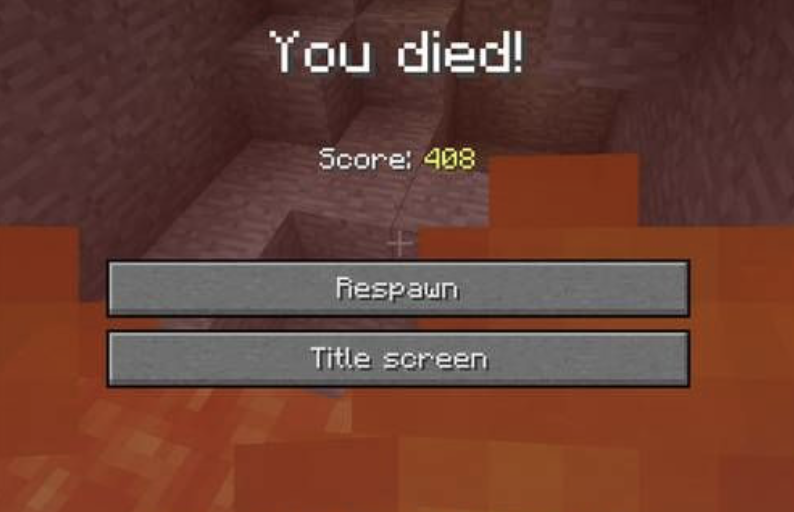

Why You Keep Dying in Minecraft (and how to fix it)
a short blog post on how to stop dying in Minecraft as a complete beginner
Published on: January 19, 2026
Minecraft is either the most peaceful or the most terrifying game in the world. As funny as that sounds, you may find yourself constantly dying as a new player. Don't worry, it happens to the best of us. This guide will mostly focus and help beginners who are jsut starting out in Minecraft, or perhaps players who just can't seem to stay alive.
1. Armor
I know, this might be the most simplest one yet, BUT it is very essential. It may not seem much, but armour truly does protect you and almost increases your health pool. Leather isn't really recommended because of the zero durability and it's terrible defense. However, if you quite literally have nothing else, leather is better than nothing. Though, it is easier to get iron armour nowadays, so we highly recommended getting iron armour as soon as possible.
2. Weapons
Weapons are similar to armour. Though instead of defense, weapons focus on offense. A great defense without a good offense, is nothing. You dont need fancy diamond weapons at first, but at least get an iron sword or axe to defend yourself. If you're wondering why some people prefer axes over swords, it's because axes deal more damage per hit, but have a slower attack speed. While a sword is faster, but it deals less damage per hit.
3. Shield
For some reason, I see every beginner not crafting this extremely crucial and game-changing item. A shield is incredinly useful in Minecraft as it blocks all incoming damage from attacks, including melee hits and projectiles like arrows. This is the best way to defend yourself against mobs and players alike. Aside from this, the crafting recipe is super easy and cheap.
4. Torches
Unlike the previous items, torches aren't typically used for attack or defense. Instead, we highly recommend torches because of their ability to light up dark areas. Dark areas are dangerous in Minecraft because all kinds of dangerous mobs spawn in. Make sure to place them inside and surrounding your base to prevent mobs from spawning in.
5. FOOD!
For this one, you MUST summon your inner big back. In all seriousness, you cannot fight to your fullest extent, nor run away if you're hungry. Always keep a good stock of food with you at all times. Whether it may be cooked meat, bread, or even apples, food is very essential to survival. Though, it is important to take note that meat typically replenishes your hunger bar more effectively than raw food or fruits.
6. Crouching
You may think and underestimate the power of crouching. As funny as it sounds, crouching can save your life in many situations. Crouching prevents you from falling off edges, which is especially useful when navigating high places or building structures. Crouching is such an underrated techniques that many beginners overlook.
Final Tips
Minecraft is sometimes really unpredictable. There is still a big chance that even if you do follow this tutorial, you might still die. However, we assure you that the likelihood of you dying will severely lower. Though, dying is really just a part of the game. Regardless of such, make sure to enjoy the game even if you get exploded by a creeper around 5 times.
References
- Mojang Studios. (n.d.).Armor. Minecraft Wiki. https://minecraft.fandom.com/wiki/Survival_guide